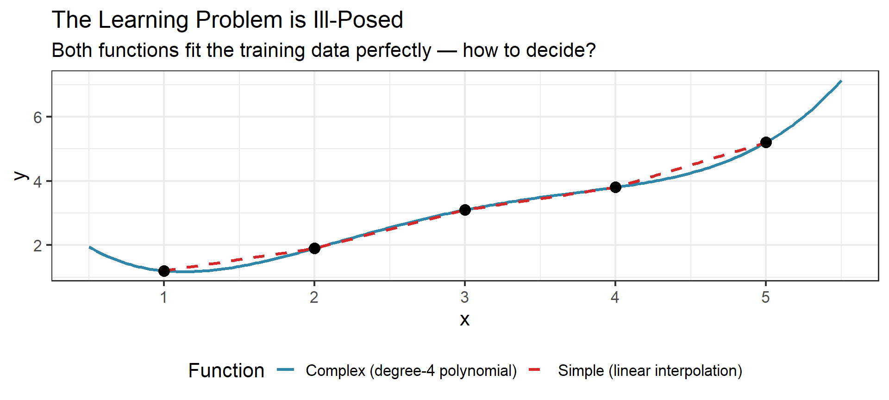
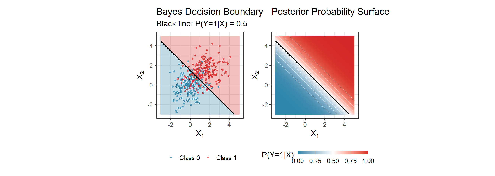
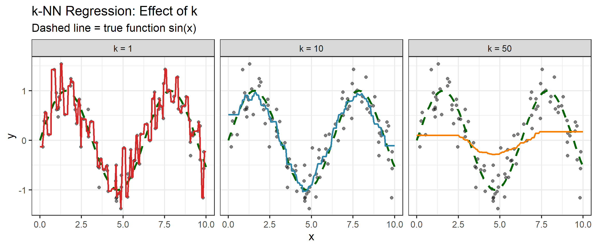
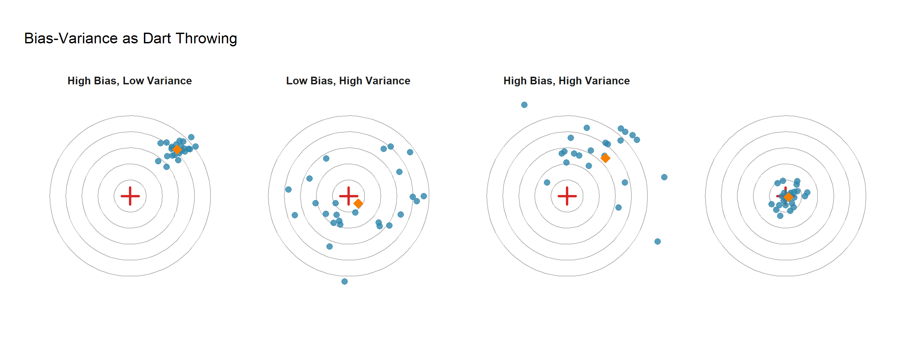
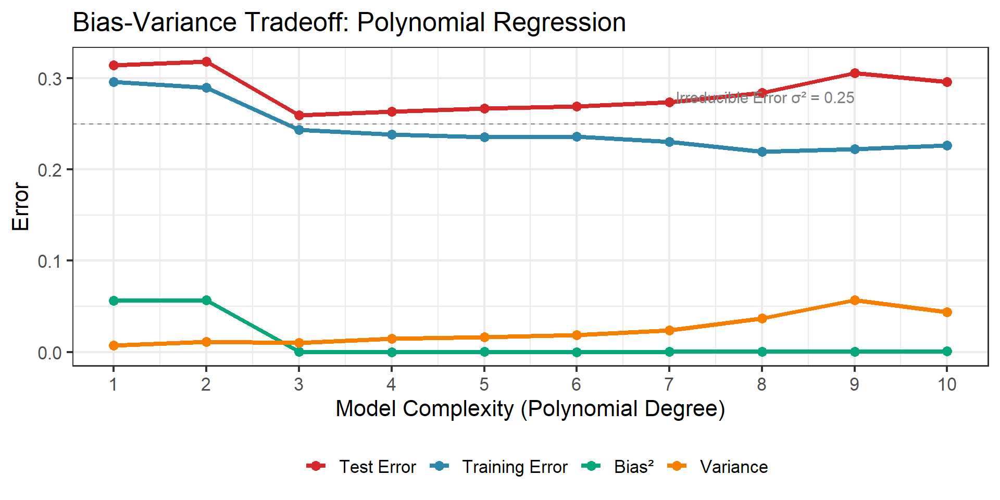
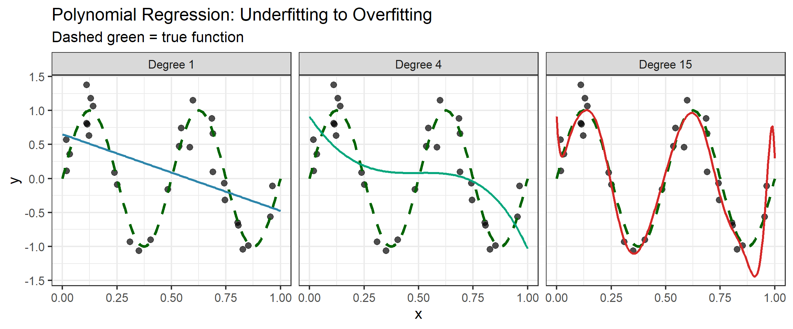
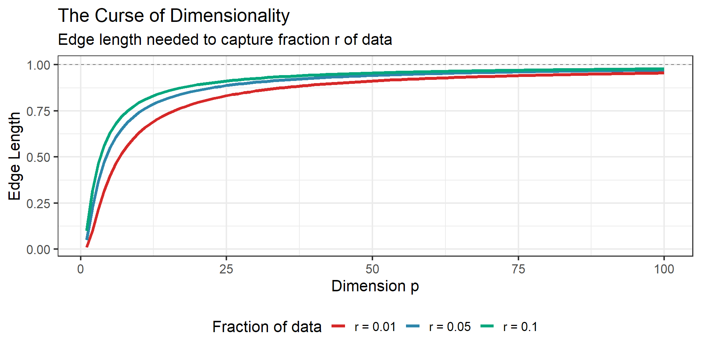
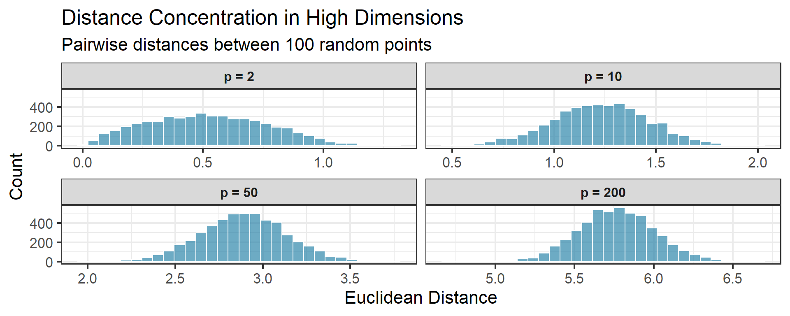
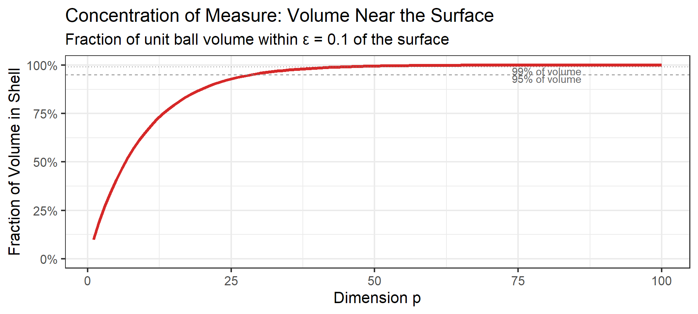
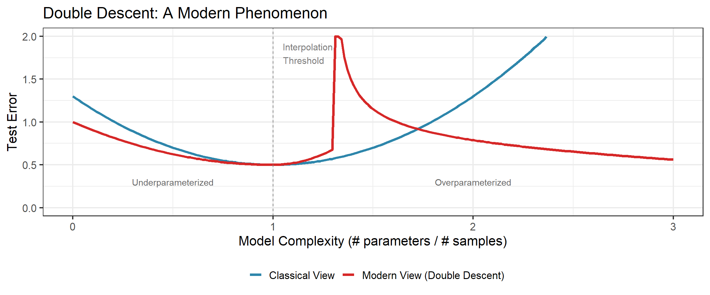

Stat 577 — Statistical Learning Theory
Spring 2026
The core question: Given data, can we learn patterns that generalize to new observations?
Consider the relationship between inputs \(X\) and outputs \(Y\):
\[Y = f(X) + \varepsilon\]
where:
Statistical learning is the set of approaches for estimating \(f\).
Before diving into formalism, consider what these methods have accomplished:
Cancer Diagnosis
Face Recognition
Handwritten Digits
Stock Prediction
The Common Thread
Each problem has the same structure: learn a function \(f\) from examples. But what is the theory behind such learning algorithms?
The framework \(Y = f(X) + \varepsilon\) is powerful but not innocent.
Hidden assumptions:
The Right Attitude
Treat \(Y = f(X) + \varepsilon\) as a useful fiction — a framework for organizing our thinking, not a claim about reality.
Given training data, infinitely many functions pass through the same points.

Occam’s Razor
Among all functions that fit the training data, prefer the simplest one.
This isn’t just aesthetic preference — it’s a statistical principle. Complex functions that fit training data perfectly often fail on new data. A good learning algorithm chooses the simplest \(f\) consistent with the evidence.
Two main goals with different implications:
Prediction: We want \(\hat{Y} = \hat{f}(X)\) to be close to \(Y\)
Inference: We want to understand how \(X\) affects \(Y\)
The Conflict
These goals can conflict. The best predictive model might be an uninterpretable neural network. The most interpretable model might predict poorly. This tension runs through the entire field.
Supervised Learning
Examples: spam detection, house price prediction
Unsupervised Learning
Examples: customer segmentation, gene expression analysis
Scope
Most of this course focuses on supervised learning. But the boundary is blurry — semi-supervised methods use both labeled and unlabeled data.
A Fundamental Principle
“There is no free lunch in statistics: no one method dominates all others over all possible data sets.”
— ISLR, Chapter 2
What this means:
This is why we study many methods, not just one. The course is about building a toolkit and knowing which tool to reach for.
Any object — a patient, an image, a stock — can be summarized as a string of numbers.
The key insight: Once we represent objects as vectors \(\mathbf{x} \in \mathbb{R}^p\), they become points in high-dimensional space.
Geometrization of Data
Statistical learning is fundamentally geometric. Every method we study is a different way of carving up or smoothing over feature space.
Our Notation Convention (ISLR/ESL style)
| Symbol | Meaning |
|---|---|
| \(n\) | Sample size (number of observations) |
| \(p\) | Number of predictors/features |
| \(\mathbf{X} \in \mathbb{R}^{n \times p}\) | Design matrix |
| \(\mathbf{y} \in \mathbb{R}^n\) | Response vector |
| \(\mathbf{x}_i \in \mathbb{R}^p\) | Feature vector for observation \(i\) (row of \(\mathbf{X}\)) |
| \((x_i, y_i)\) | \(i\)th observation pair |
| \(\hat{f}\) | Estimated function |
| \(\hat{y}\) | Predicted value |
To evaluate how well \(\hat{f}\) approximates \(f\), we need a loss function \(L(y, \hat{y})\).
Common loss functions:
| Name | Formula | Optimal Predictor |
|---|---|---|
| Squared loss (\(L_2\)) | \((y - \hat{y})^2\) | Conditional mean |
| Absolute loss (\(L_1\)) | \(|y - \hat{y}|\) | Conditional median |
| 0-1 loss | \(\mathbf{1}(y \neq \hat{y})\) | Bayes classifier |
The choice of loss function determines what “optimal” means.
Definition: Expected Prediction Error (EPE)
For a loss function \(L\) and predictor \(\hat{f}\):
\[\text{EPE}(\hat{f}) = E_{X,Y}[L(Y, \hat{f}(X))]\]
This averages over both the distribution of \(X\) and the conditional distribution of \(Y|X\).
For squared loss, we can decompose EPE pointwise:
\[\text{EPE}(\hat{f}) = E_X\left[ E_{Y|X}[(Y - \hat{f}(X))^2 | X] \right]\]
Theorem: The function minimizing EPE under squared loss is the conditional expectation:
\[f^*(x) = E[Y | X = x]\]
Proof sketch: \[E[(Y - c)^2 | X = x] = E[Y^2|X=x] - 2cE[Y|X=x] + c^2\]
Take derivative w.r.t. \(c\), set to zero: \[-2E[Y|X=x] + 2c = 0 \implies c = E[Y|X=x]\]
Intuition
The conditional mean is the “center of mass” of \(Y\) given \(X=x\) — it minimizes the average squared distance.
Theorem: The function minimizing EPE under absolute loss is the conditional median:
\[f^*(x) = \text{median}(Y | X = x)\]
Why Median?
The Lesson
One outlier shifts the mean by 2 but the median by only 0.1.
When outliers are expected (income data, sensor errors, etc.), \(L_1\) loss gives more robust predictions.
For classification with 0-1 loss, the optimal classifier assigns each \(x\) to the most probable class:
\[f^*(x) = \arg\max_{g} P(Y = g | X = x)\]
Bayes Error Rate
The error rate of the Bayes classifier is:
\[R^* = 1 - E_X[\max_g P(Y = g | X)]\]
This is the irreducible error — no classifier can do better.
Hmm, why not use it then?
Problem:

Reading This Plot
A simple, intuitive approach to estimate \(f(x)\):
\[\hat{f}(x) = \frac{1}{k} \sum_{x_i \in N_k(x)} y_i\]
where \(N_k(x)\) is the set of \(k\) nearest neighbors of \(x\).
Key Question
How should we choose \(k\)? This is a model complexity parameter.

Boundary Effects
At the edges of the data (\(x \approx 0\) or \(x \approx 10\)), k-NN effectively uses a “half-neighborhood” — all \(k\) neighbors come from one direction. This causes:
Other practical issues:
Linear Regression
“Globally linear”
k-Nearest Neighbors
“Locally constant”
The Tradeoff Emerges
Strong assumptions (linear) → Lower variance, potentially higher bias
Weak assumptions (k-NN) → Lower bias, higher variance
This tension is the heart of statistical learning.
The methods we study occupy the middle ground between these extremes:
| Method | Structure | Locality | This Course |
|---|---|---|---|
| Linear regression | Global, rigid | None | Week 2 |
| Ridge/Lasso | Global, regularized | None | Week 3 |
| Splines, GAMs | Semi-local, smooth | Moderate | Week 5 |
| Trees, forests | Adaptive partitions | Local | Week 6 |
| SVM | Global (kernel-dependent) | Varies | Week 7 |
| Neural networks | Hierarchical | Learned | Weeks 8–12 |
| k-NN | Local, unstructured | High | Week 1 (today) |
The Course Arc
We’ll build from strong assumptions (linear models) toward flexible methods (neural networks), always asking: what assumptions does this method make, and when do they help or hurt?
We’ve seen that linear models make strong assumptions (low variance, potential bias) while k-NN makes weak assumptions (low bias, high variance).
But can we make this precise? What exactly do “bias” and “variance” mean, and how do they affect prediction error?
Imagine we could repeatedly sample training sets and fit \(\hat{f}\).
For a fixed test point \(x_0\), the expected prediction error has three components:
\[E[(Y - \hat{f}(x_0))^2] = \underbrace{\sigma^2}_{\text{Irreducible}} + \underbrace{[\text{Bias}(\hat{f}(x_0))]^2}_{\text{Bias}^2} + \underbrace{\text{Var}(\hat{f}(x_0))}_{\text{Variance}}\]
Key Insight
We cannot minimize bias and variance simultaneously — this is the bias-variance tradeoff.
Let \(Y = f(x_0) + \varepsilon\) where \(E[\varepsilon] = 0\) and \(\text{Var}(\varepsilon) = \sigma^2\).
The expected squared error at \(x_0\) (expectation over training data and \(\varepsilon\)):
\[\text{Err}(x_0) = E[(Y - \hat{f}(x_0))^2]\]
Write \(Y - \hat{f}(x_0) = (Y - f(x_0)) + (f(x_0) - \hat{f}(x_0))\)
\[= \varepsilon + (f(x_0) - \hat{f}(x_0))\]
\[E[(Y - \hat{f}(x_0))^2] = E[(\varepsilon + f(x_0) - \hat{f}(x_0))^2]\]
Expand: \[= E[\varepsilon^2] + 2E[\varepsilon(f(x_0) - \hat{f}(x_0))] + E[(f(x_0) - \hat{f}(x_0))^2]\]
Since \(\varepsilon\) is independent of \(\hat{f}\) and has mean 0:
\[= \sigma^2 + 0 + E[(f(x_0) - \hat{f}(x_0))^2]\]
Now decompose \(E[(f(x_0) - \hat{f}(x_0))^2]\).
Add and subtract \(E[\hat{f}(x_0)]\):
\[= E[(f(x_0) - E[\hat{f}(x_0)] + E[\hat{f}(x_0)] - \hat{f}(x_0))^2]\]
Let \(a = f(x_0) - E[\hat{f}(x_0)]\) (a constant) and \(b = E[\hat{f}(x_0)] - \hat{f}(x_0)\) (random).
\[= E[(a + b)^2] = a^2 + 2aE[b] + E[b^2]\]
Note that \(E[b] = E[E[\hat{f}(x_0)] - \hat{f}(x_0)] = 0\).
So: \[E[(f(x_0) - \hat{f}(x_0))^2] = a^2 + E[b^2]\]
\[= (f(x_0) - E[\hat{f}(x_0)])^2 + E[(E[\hat{f}(x_0)] - \hat{f}(x_0))^2]\]
Bias-Variance Decomposition
\[E[(Y - \hat{f}(x_0))^2] = \sigma^2 + \underbrace{[f(x_0) - E[\hat{f}(x_0)]]^2}_{\text{Bias}^2(\hat{f}(x_0))} + \underbrace{\text{Var}(\hat{f}(x_0))}_{\text{Variance}}\]
Irreducible Error \(\sigma^2\)
Bias\(^2\)
Variance
The Tradeoff
But…
This U-shaped picture is a mental model, not a theorem. Double descent (Week 8) shows the story is richer. The bias-variance decomposition is a framework for thinking, not a universal law.

The Analogy

Training Error
Test Error
Key Lesson
Never use training error to select model complexity!

As dimension \(p\) increases, our intuition about space breaks down.
The problem: Local methods (like k-NN) assume we can find “nearby” points.
In high dimensions:
Consider real applications we mentioned earlier:
| Application | Dimension \(p\) | Typical Sample Size \(n\) |
|---|---|---|
| Gene expression (cancer) | 5,000 – 20,000 | 30 – 200 |
| Face recognition | 10,000+ (pixels) | 100 – 1,000 |
| Text classification | 50,000+ (vocabulary) | 1,000 – 10,000 |
| Financial indicators | 100 – 1,000 | 250 (trading days/year) |
The Uncomfortable Reality
In most modern applications, \(p \gg n\) — we have far more features than observations.
Classical statistics (designed for \(n \gg p\)) doesn’t directly apply. This is where statistical learning theory becomes essential.
Consider data uniformly distributed in a \(p\)-dimensional unit hypercube.
To capture a fraction \(r\) of the data in a hypercubic neighborhood centered at a point, we need edge length:
\[e_p(r) = r^{1/p}\]
| Dimension \(p\) | Edge length for \(r = 0.01\) | Edge length for \(r = 0.1\) |
|---|---|---|
| 1 | 0.01 | 0.10 |
| 2 | 0.10 | 0.32 |
| 10 | 0.63 | 0.79 |
| 100 | 0.955 | 0.977 |
The Curse
In high dimensions, even small neighborhoods span most of the data range!

In low dimensions:
In high dimensions:
Sample size requirement: To maintain constant density of points, need \(n = O(c^p)\) samples!
Suppose we want training points dense enough that the nearest neighbor is within 1% of each axis (linear density = 100).
Required sample size:
| Dimension \(p\) | Required \(n = 100^p\) |
|---|---|
| 1 | 100 |
| 2 | 10,000 |
| 5 | 10 billion |
| 10 | \(10^{20}\) (more than atoms in a gram of matter) |
The Fundamental Lesson
In high dimensions, there is no substitute for assumptions.
We cannot simply “collect more data” — the required sample size grows exponentially. Instead, we must impose structure: linearity, sparsity, smoothness, or low intrinsic dimension.
An even stranger phenomenon: in high dimensions, all pairwise distances become nearly equal.
For \(n\) points uniformly distributed in the unit hypercube:
\[\frac{d_{\max} - d_{\min}}{d_{\min}} \to 0 \quad \text{as } p \to \infty\]
Implication
If all points are equidistant, the concept of “nearest neighbor” becomes meaningless!

Another perspective: the volume of a unit ball shrinks rapidly.
Volume of unit ball in \(p\) dimensions:
\[V_p(1) = \frac{\pi^{p/2}}{\Gamma(p/2 + 1)}\]
| Dimension \(p\) | Volume |
|---|---|
| 2 | \(\pi \approx 3.14\) |
| 3 | \(\frac{4\pi}{3} \approx 4.19\) |
| 10 | \(\approx 2.55\) |
| 20 | \(\approx 0.026\) |
| 100 | \(\approx 10^{-40}\) |
Most of the “volume” is in the corners of the hypercube!
Perhaps the most counterintuitive result: most of a high-dimensional sphere’s volume is near its surface.
For a unit ball in \(p\) dimensions, the fraction of volume within distance \(\epsilon\) of the surface is:
\[\text{Fraction in shell} = 1 - (1 - \epsilon)^p \approx 1 - e^{-p\epsilon} \text{ for large } p\]

What This Means
In high dimensions:
This is why sampling in high dimensions feels fundamentally different.
The curse of dimensionality tells us we need assumptions to learn in high dimensions.
Common structural assumptions:
Key Insight
Statistical learning is about choosing the right structural assumptions for your problem.
The bias-variance tradeoff suggests: don’t overfit!
Classical advice:
But modern deep learning:
What’s going on?

The Phenomenon
Test error can decrease again after the interpolation threshold — when models have enough capacity to perfectly fit training data.
Three regimes:
We’ll revisit this in Week 8 (Neural Networks).
Several (still debated!) explanations:
Implicit regularization: Gradient descent finds “simple” solutions even in overparameterized models
Multiple interpolating solutions: With many parameters, some that fit training data also generalize
Smoothness: Overparameterized models can be smoother than barely-fitting ones
Open Question
We don’t fully understand this yet! Active area of research.
Feature vectors are the language of learning machines — any object becomes a point in high-dimensional space
The learning problem is ill-posed — many functions fit the data; Occam’s razor says prefer the simplest
Loss functions define what “optimal” means:
Bias-variance decomposition: \[\text{EPE} = \sigma^2 + \text{Bias}^2 + \text{Variance}\]
Curse of dimensionality: In high dimensions (\(p \gg n\)), local methods fail — we need structural assumptions
Modern twist: Double descent shows the story is richer than the classical U-curve — stay curious!
Next week: Linear Models & Least Squares
Preparation: